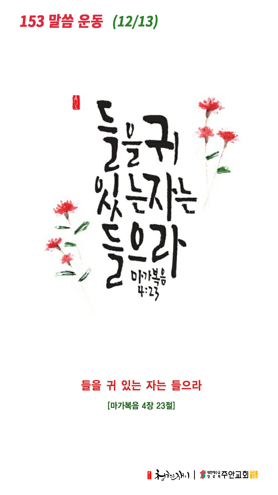

온라인 기도실 안내
2020년 12월13일(일)~12월19일(토)
- 온라인 기도실은 온 회중이 함께 하나님께 나아가는 자리입니다
- 30분 정도 여유를 가지고 하시길 바랍니다
- 말씀과 묵상, 찬양과 기도로 함께 합니다
- 배경 음악이 나올 수 있습니다 볼륨을 조절해주세요
준비가 되셨으면 아래의 버튼을 눌러주세요
찬양, 주의 성실을 찬양하리이다
(시71:22)
- 가사를 묵상하며 읽습니다
날마다 숨쉬는 순간마다
내 앞에 어려운 일 보네
주님 앞에 이 몸을 맡길 때
슬픔 없네 두려움 없네
주님의 그 자비로운 손길
항상 좋은 것 주시도다
사랑스레 아픔과 기쁨을
수고와 평화와 안식을
날마다 주님 내 곁에 계셔
자비로 날 감싸주시네
주님 앞에 이 몸을 맡길 때
힘 주시네 위로함 주네
어린 나를 품에 안으시사
항상 평안함 주시도다
내가 살아 숨을 쉬는 동안
살피신다 약속하셨네
찬양, 주의 성실을 찬양하리이다
(시71:22)
- 가사를 묵상하며 읽습니다
인생의 어려운 순간마다
주의 약속 생각해보네
주님 속에 믿음 잃지 않고
말씀 속에 위로를 얻네
주님의 도우심 바라보며
모든 어려움 이기도다
흘러가는 순간 순간마다
주님 약속 새겨봅니다
찬양, 주의 성실을 찬양하리이다
(시71:22)
날마다 숨쉬는 순간마다 by 조수아
위의 찬양이 끝나면 말씀읽기를 눌러주시면 됩니다
말씀하옵소서, 주의 종이 듣겠나이다
(삼상3:10)
오늘의 말씀입니다
음악 소리가 크면 조절하시기 바랍니다
"날마다 숨쉬는 순간마다" 편곡 및 연주 by 이지선

마음의 묵상
(막4:23)
“들을 귀 있는 자는 들으라”
1. 평소 말하는 스타일이신가요 듣는 스타일이신가요?
2. 주님은 우리에게 왜 들으라고 말씀하시는 걸까요?
3. 주님께 말하기보다 주님의 말씀을 잘 듣고 계신가요?
듣는 귀를 열어주소서
회개, 삶의 방향을 바꾸는 결정
주님은 늘 곁에 계시고 돌아오라 말씀하십니다
“내게로 돌아오라 그리하면 나도 너희에게로 돌아가리라”
- 말라기 3장7절 -
3분 정도 회개하며 주님 앞에 나아갑니다
내 중심이 주를 간절히 구하오리니
(사26:9)
- 다음의 기도문을 소리 내어 읽습니다
마틴 루터, 흑사병 치유를 위한 기도
오 주님,
당신께서는 가난하고 불쌍한 피조물들을 아십니다.
우리는 심히 연약하여 당신의 거룩한 말씀 앞에서 감사한 줄 모르고
당신의 뜻을 제 맘대로 왜곡하며 삽니다.
내 중심이 주를 간절히 구하오리니
(사26:9)
- 다음의 기도문을 소리 내어 읽습니다
마틴 루터, 흑사병 치유를 위한 기도
주님,
우리를 불쌍히 여겨주소서.
지금 우리는 범죄로 인해 지독한 역병에 시달리고 있습니다.
우리의 교만을 징계하시되 당신의 자비 가운데 새로운 피조물로 거듭나게 하소서.
기도를 들으시는 주님, 당신께 간절히 구하오니 우리가 당신의 말씀과 뜻을 경청하게 하시고
이 병을 거두어주소서.
하나님 나라
1. 하나님의 나라가 속히 이 땅에 임하게 하소서
온 우주와 역사를 다스리시고 주관하시는 하나님 아버지, 범죄한 인류의 죄를 용서하시고,
우리의 교만과 죄로 인한 고통과 질병과 사망이 더 이상 우리를 공격하지 못하게 막아주소서.
간절한 마음으로 3분 정도 기도합시다
남과 북
2. 남북한이 속히 복음으로 통일되게 하소서
하나님 아버지, 정치, 경제, 사회, 문화, 종교적으로 동토가 되어버린 북한 땅을
복음의 빛과 성령의 불로 녹여주시고, 북한 동포들에게 참 자유와 해방을 속히 허락하여 주옵소서.
간절한 마음으로 3분 정도 기도합시다
대한민국
3. 우리나라가 하나님을 경외하는 나라가 되게 하소서
하나님 아버지, 정치적으로, 이념적으로 둘로 나뉘어 극심한 혼란 가운데 있는 우리 민족을
불쌍히 여기사 하나 되게 하시고, 위정자들이 당리당략을 벗어나 나라와 민족을 먼저 생각하는
섬김의 종들이 되게 하소서.
간절한 마음으로 3분 정도 기도합시다
한국교회
4. 한국교회가 성령으로 새롭게 부흥되게 하소서
하나님 아버지, 수백 개의 교파와 교단으로 나뉘어진 한국교회가 먼저 주 안에서 하나 되게 하시고,
한국교회가 성령 안에서 새롭게 거듭나 다시 한 번 나라와 민족의 등불이 되게 하소서.
간절한 마음으로 3분 정도 기도합시다
주안교회
5. 주안교회가 선교적 삶으로 세상을 섬기고 치유하게 하소서
하나님 아버지, 주안의 성도들이 온 우주와 역사와 개인의 삶까지 모든 것을
당신의 섭리가운데 인도하시는 하나님만 바라보게 하시고,
삶의 어떤 상황에서도 실망하지 않고 하나님의 뜻이 이루어지기를 소망하게 하소서.
간절한 마음으로 3분 정도 기도합시다
감사의 기도
- 오늘 기도를 인도하신 주님께 감사를 올려드립니다
- 아래의 구절을 읽고 주님께 감사의 마음을 올려드립시다
“주께서 내게 응답하시고 나의 구원이 되셨으니 내가 주께 감사하리이다”
- 시편 118장 21절 -
고요한 가운데 잠시 침묵하시기 바랍니다
파송, 세상을 향하여
- 오늘의 온라인 기도를 마쳤습니다
기도를 들으신 주님께서 평안히 가라 하십니다
주님께서 우리와 함께 하시니 두려울 것이 없습니다
새벽을 깨우며
- 새벽기도회 안내입니다